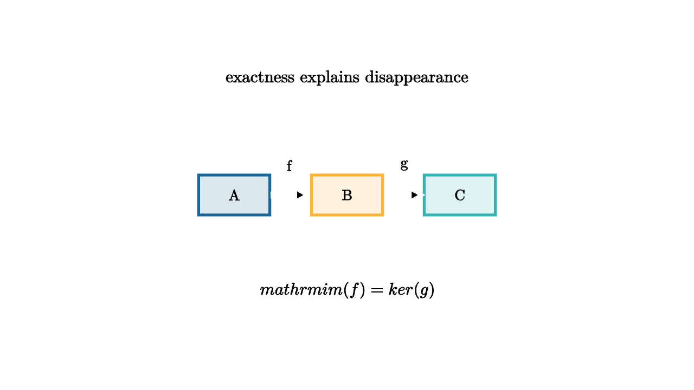

Exact Sequences Track What Survives
Topology often studies a space by cutting it into pieces. That strategy creates a bookkeeping problem. A loop may live entirely in one piece, disappear when the piece is enlarged, or become the boundary of a higher-dimensional feature. Exact sequences are the ledger that keeps track of those changes.
The algebraic phrase is short:
In a sequence A -> B -> C, exactness at B says that the elements of B killed by the next map are exactly the elements that arrived from the previous map. Everything that vanishes has an explanation. Everything that arrived is guaranteed to vanish next.

source
let Box = |pos, label, col| [
center{pos} fill{alpha{0.16} col} stroke{col, 3} Rect([0.82, 0.46]),
center{pos} Text(label, 0.62)
]
mesh scene = [
center{1.35u} Text("exactness explains disappearance", 0.7),
Box([-1.3, 0, 0], "A", BLUE),
Box([0, 0, 0], "B", ORANGE),
Box([1.3, 0, 0], "C", TEAL),
stroke{WHITE, 4} Arrow([-0.86, 0, 0], [-0.46, 0, 0]),
stroke{WHITE, 4} Arrow([0.46, 0, 0], [0.86, 0, 0]),
center{[-0.66, 0.34, 0]} Text("f", 0.62),
center{[0.66, 0.34, 0]} Text("g", 0.62),
center{1.1d} Tex("\\mathrm{im}(f)=\\ker(g)", 0.7)
]The first time exact sequences feel natural is in relative homology. Suppose A is a subspace of X. A cycle in A can be included into X. A cycle in X can be viewed relative to A, where chains inside A are treated as invisible. Then a relative cycle may have a boundary lying in A. The maps connect these ideas into a long exact sequence:
The boundary map is the dramatic one. A relative class in H_n(X,A) may represent a piece whose boundary sits in A. Exactness says that this boundary is precisely the obstruction to coming from an honest class in H_n(X).
source
let DiskWithRim = |filled| [
fill{alpha{0.06 + 0.22 * filled} BLUE} stroke{BLUE, 3} Circle(0.62),
stroke{ORANGE, 5} Circle(0.62),
center{0r} Text("X", 0.62),
center{[0, -0.9, 0]} Text("rim A", 0.62)
]
"Subspace"
mesh title = center{1.34u} Text("a relative class points to its boundary", 0.66)
mesh diagram = DiskWithRim(0)
mesh note = center{1.2d} Text("inside the pair, the rim is the boundary data", 0.62)
play Fade(0.7)
play Write(0.7)
"Filling"
diagram = DiskWithRim(1)
play Lerp(1.0)
note = center{1.2d} Text("the connecting map sends filling to rim", 0.62)
play Trans(0.6)
"Exact"
diagram = [
center{-1.2r} DiskWithRim(1),
stroke{WHITE, 4} Arrow([-0.55, 0, 0], [0.55, 0, 0]),
center{1.2r} stroke{ORANGE, 5} Circle(0.52),
center{1.2r + 0.72d} Text("boundary survives in A", 0.62)
]
play Trans(1.0)A concrete example is a disk X and its boundary circle A. The disk itself has no one-dimensional hole. The boundary circle has a one-dimensional class. Relative homology sees the disk as a two-dimensional class whose boundary is the circle. In the long exact sequence, the connecting map sends the relative two-class to the boundary one-class. The circle survives in A because it bounds only after the disk is allowed.
Mayer-Vietoris is another major exact sequence. Cover a space X by two overlapping open sets U and V. The homology of U, V, and $U \cap V$ helps compute the homology of X. The exact sequence tracks which cycles in the pieces agree on the overlap and which cycles are created by gluing the pieces together.
For the circle, cover it by two arcs whose overlap has two components. Each arc is individually contractible. The overlap carries the clue: two shared pieces create a loop after gluing. Exactness turns that clue into H_1(S^1) \cong \mathbb Z.
The same logic scales. In algebraic topology, many hard computations become manageable because exact sequences let information flow through known pieces. In algebra, short exact sequences explain extensions of groups, modules, and vector spaces. In geometry, sheaf cohomology uses exactness to measure when local solutions patch into global solutions.
The teacher's way to read an exact sequence is to pause at one term and ask two questions. Which elements arrived from the left? Which elements are killed on the right? Exactness says those two answers match. That match is the whole machine. It turns survival, disappearance, and obstruction into a chain of precise local tests.
The earlier lessons gave loops, gluing, and homology. Exact sequences add narrative structure. They tell where a class came from, where it goes, and what its failure to move reveals about the topology around it.